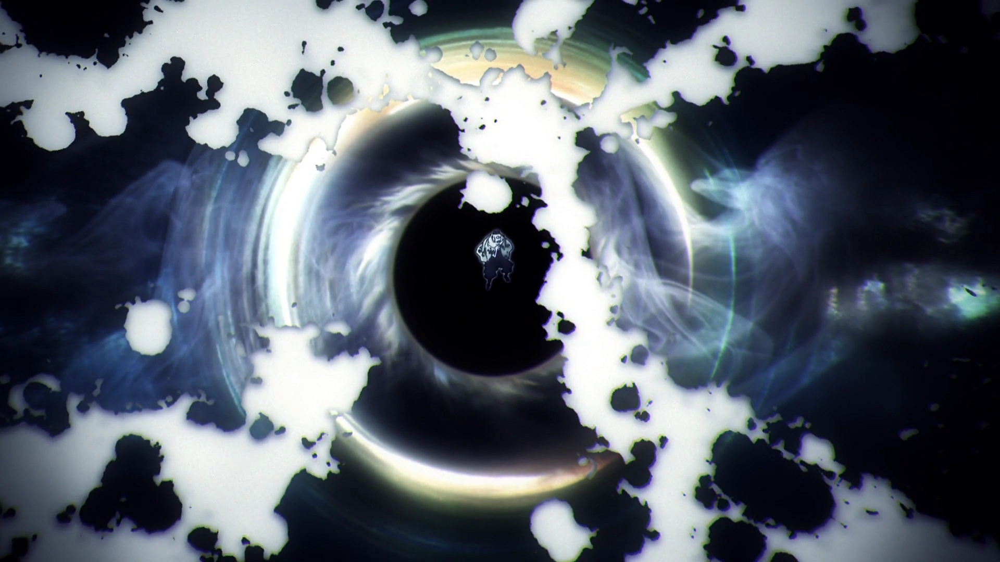
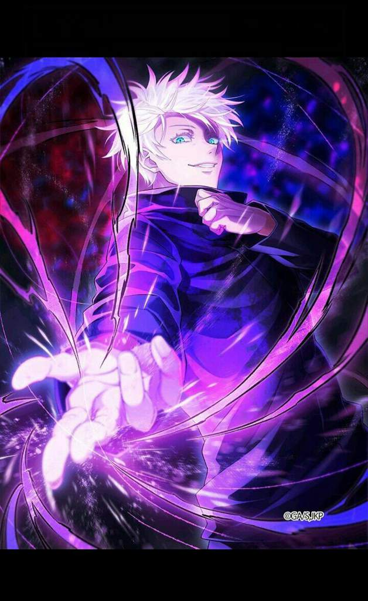
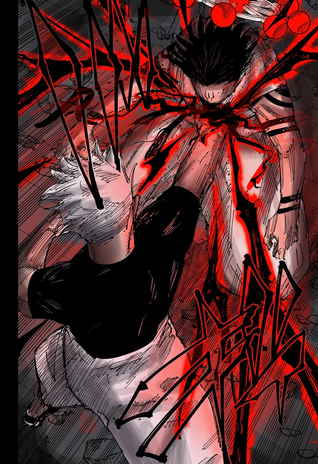
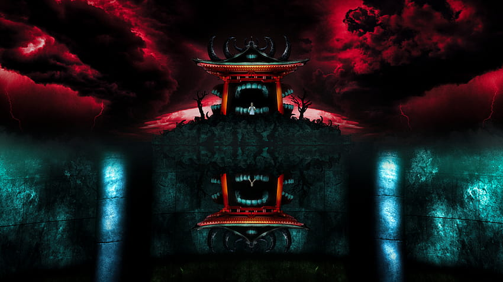
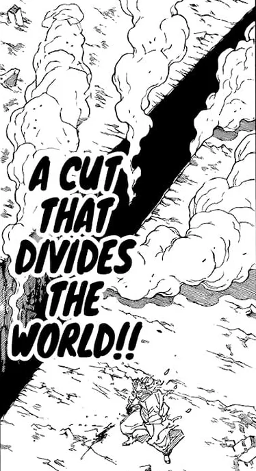

Uma luta está prestes a começar.
A luta entre o feiticeiro mais forte da Era Moderna (Gojo), contra o Rei das
Maldições (Sukuna).
Escolha:

A luta começa com Gojo lançando um "Vazio Roxo" com 200% a mais de sua força a 4km de distância,
fazendo com que Sukuna perca os seus braços, mas Sukuna o Rei das Maldições regenera seus braços usando
energia amaldiçoada reversa.
Escolha:

A luta começa com você recebendo um ataque surpresa, o "Vazio Roxo",
você então consegue parar ele
com seus braços reforçando eles com energia amaldiçoada,
mas você perde suas duas mãos.
Escolha:
Começa uma luta muito intença, com muitos socos e feitiços, até que vocês acabem se distanciando abrindo
brecha para vocês usarem alguma de suas habilidades.
Escolha:


Você volta pra casa e o vilão destrói a cidade, o país e o mundo.
Fim.
Começa uma luta muito intença, com muitos socos e feitiços, até que vocês acabem se distanciando abrindo
brecha para vocês usarem alguma de suas habilidades.
Escolha:


Você não consegue fugir por conta de seus ferimentos e morre.
Você morreu.
Sukuna também abre sua expansão de dominío ao mesmo tempo que você, elas acabam anulando o "acerto garantido" umas das outras,
enquanto lutam para ver qual domínio prevalecerá.
Você não consegue conjurar a tempo, pois Sukuna abriu uma expansão de dominío, fazendo com que ele consiga te cortar ao meio.
Você morreu.
Gojo também abre sua expansão de dominío ao mesmo tempo que você, elas acabam anulando o "acerto garantido" umas das outras,
enquanto lutam para ver qual domínio prevalecerá.
Você não consegue usar a tempo e Gojo abre uma expansão de dominío e te mata.
A luta contiua muito intensa com os dois dando tudo de si, e o cansaço começa a tomar conta dos dois por conta dos golpes que os dois estão recebendo,
ficando cada vez mais machucados. Até que, após tanto cansaço, os dois dominíos são destruídos, dando oportunidade para abri-lo novamente.
Você então começa a mandar cortes no dominío de Gojo até que ela se quebre, quando ela quebra,
você agora tem seu "acerto garantido" de seu dominío e começa a cortar Gojo várias vezes enquanto ele se cura.
O tempo de seu dominío acaba.
Escolha:

Vocês abrem o dominío novamente, mas você abriu seu dominío 0,02 segundos antes de Sukuna, pois ele estava se curando antes de abri-lo, fazendo com que o seu prevelacesse.
Seu dominío então, atinge Sukuna, deixando-o paralisado...
Escolha:
 

Você abre seu dominío, Gojo também tenta abrir mas não consegue, pois está exausto.
Agora com seu acerto garantido você...
Escolha:

Gojo luta melhor que você, você perde a luta e morre.
Você morreu.
Sukuna é evaporado pelo "Roxo" e morre, assim você derrotou o vilão e salvou o dia.
Fim.
Não foi o suficiente para matar Sukuna, acaba o tempo de seu dominío.
E após sair dele, Sukuna usa o "Corte que corta o Mundo", te cortando no meio e você morre.
Você morreu.
Você corta Gojo ao meio e o mata. Consegue realizar seu plano e domina o mundo.
Gojo ativa o "Mugen" e a Flecha de fogo não o atinge
Seu dominío acaba, ele vai pra cima de você e te mata.
Você morreu.